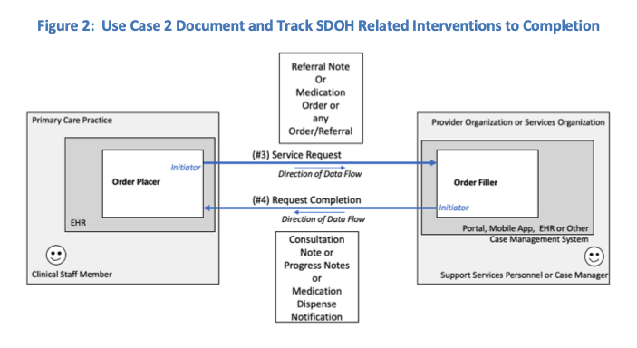

SDOH Clinical Care
0.0.3 - CI Build
SDOH Clinical Care
0.0.3 - CI Build
SDOH Clinical Care - Local Development build (v0.0.3). See the Directory of published versions
This use case is relevant for documenting actions planned or completed in response to data collected about social risks and social needs in electronic health information systems. Actions can include counseling, education, consults, referrals, case management, care planning, and modifications to treatment.
Transactions:
To illustrate this use case, the role of Order Placer is filled by a Clinical Staff Member (see Table 4 below). The Order Placer can be filled by other human actors to include the Patient and their proxy. In this case, the Patient can use a mobile app, PHR, or patient portal to place the order and interact with the Order Filler.
| Human Actor | Business Actor | System Actor | Technical Role |
|---|---|---|---|
| Clinical Staff Member | PCP Practice | EHR | Order Placer |
| Support Services Personnel or Case Manager |
Provider Organization or Services Organization |
Portal or mobile app, another EHR, or other case management system |
Order Filler |
| Quality Specialist / Health Plan Care Manager | Payer Organization | Health plan management system | Order Filler |
| Use Case Element | Service Request |
|---|---|
| Assumptions: | Clinical Staff Member consults the Patient on order options and works with the Patient to understand preferences (e.g., preferred suppliers, out of pocket costs) before placing the order. Order Placer system will automatically assign a unique ID to the service request. Order Filler is able to receive and process the order/request from the Order Placer. |
| Preconditions: | Clinical system (EHR) has documented assessment information, health concerns, goals, and planned interventions or performed referrals. Clinical system takes on role as Order Placer system and assigns and includes a unique Service Request ID in the order. |
| Transaction 3: | Service Request Order information (referral, planned intervention, ordered activity) is sent from the Order Placer (EHR) to the Order Filler (system used by the person/organization to complete the request such as a Case Management system, pharmacy system, community referral system, or mobile app). Order Filler system responds to indicate receipt of the request transaction. |
| Message Content: | Relevant information needed for the Order Filler to start the ordered activity. |
| Post Conditions: | Order Placer system had a receipt of the order/request from the Order Filler. Order Filler has acknowledged receipt of the request and supplied an ID associated with the order in its system. |
| Alternate Flow 1: | Order Filler rejects order/request. Order Placer sends service request to new Order Filler. Order Placer role is conducted by the Patient or their proxy. User of the Order Filler system acknowledges receipt of order/request manually either by fax, phone, or email. |
| Alternate Flow 2: | Order Filler transfers service request to new order filler (without sending back to Order Placer). New Order Filler system responds to request from Order Placer. |
| Use Case Element | Service Request Response |
|---|---|
| *Assumptions: | ID of the service request (provided by the Requester System) is maintained by the Order Placer and Order Filler system. The Order Placer also retains the Order ID assigned by the Order Filler system. Order Filler system returns both of these IDs with the Request Completion that indicates the ordered activity has been completed. |
| Preconditions: | Order Placer system generates and manages request IDs used to track initiated requests and order IDs used to track initiated orders. Order Filler system generates and manages activity IDs and maintains the relationship between tasks and requests/orders based on these IDs. |
| Transaction 4: | Request Completion Information about the completed activity is communicated back to the initiating party/system (Order Placer). |
| Message Content: | Information about the initial request that was completed and information about the activity that was performed to complete the request (completed interventions). Includes the ID of the original service request and the ID of the ordered activity in the system where completion of the activity is documented. |
| Post Conditions: | Order Placer uses the ID of the original request to associate incoming information to previously generated requests/orders. Order Placer uses the returned completed activity information to update ordered activities to be completed activities within the system. |
| Alternate Flow 1: **(HumanTask#1): |
User of Order Filler system contacts the organization placing the order to report that the ordered activity had been completed. |
| Alternate Flow 2: (HumanTask#2): |
User of Order Placer system validates the return request information and marks the ordered activities as completed in the system. |
|  |
IG © 2020+ . Package SDOH-CC#0.0.3 based on FHIR 4.0.1. Generated 2020-03-19
Links: Table of Contents |
QA Report
| Version History  |
|
 |
Propose a change
|
Propose a change